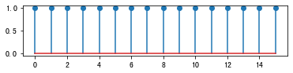
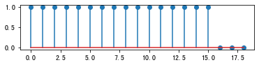

4.1. 序列时域混叠¶
同时域采样一样，定义采样序列\(p_N(�\omega) = �\sum_{k=-�\infty}^{�\infty} �\delta (�\omega - 2k�\pi /N)\)。那么，将频域采样前后的关系写为
\[\begin{split}\begin{split}
X_p(e^{j\omega}) &= X(e^{j\omega})\cdot p_N(\omega) = \sum_{k=-\infty}^\infty \delta\left(\omega - \frac{2k\pi}{N}\right) \cdot X(e^{j\omega}) \\
& = \sum_{k=-\infty}^\infty \delta\left(\omega - \frac{2k\pi}{N}\right) \cdot X(e^{j2k\pi/N})
\end{split}\end{split}\]
其中\(X_p(e^{j�\omega})\)为\(X[k]\)的连续形式，表达的信号是等价的。那么对上式进行 IDTFT 变换，就可以得到频域采样后时域的信号，这里记作\(�\tilde{x}[n]\)
\[\begin{split}\tilde{x}[n] &= \text{IDTFT}\{X_p(e^{j\omega})\} \\
& =\frac{1}{2 \pi} \int_{-\pi}^{\pi}\left(\sum_{k=-\infty}^{\infty} X\left(e^{j 2 \pi k / N}\right) \delta(\omega-2 \pi k / N)\right) e^{j \omega n} d \omega \\
& = \frac{1}{2 \pi} \sum_{k=-\infty}^{\infty} \underbrace{X\left(e^{j 2 \pi k / N}\right)}_{=\sum_{l=-\infty}^{+\infty} x[l] e^{-j 2 \pi k l / N}} \cdot \underbrace{\int_{-\pi}^{\pi} \delta(\omega-2 \pi k / N) e^{j \omega n} d \omega}_{=e^{j 2 \pi k n / N, \ \text{ for } k\in [0,N-1]}} \\
&= \frac{1}{2 \pi} \sum_{l=-\infty}^{\infty} x[l] \underbrace{\sum_{k=0}^{N-1} e^{j 2 \pi k / N(n-l)}}_{=N\sum_{m=-\infty}^{\infty}\delta[l-n-Nm]} \\
&= \frac{N}{2 \pi} \sum_{m=-\infty}^{\infty} x[n+mN]\end{split}\]
上式最后一个等式的求和符号的含义就是，将原信号\(x[n]\)以\(N\)为长度，周期延拓。也就是说，如果对 DTFT 变换的频率进行离散化，会导致时域上信号的周期延拓，幅度也会变为原来的\(N/2�\pi\)倍。这个结论与对信号在时域进行采样，频域周期延拓是类似的。
[1]:
%matplotlib inline
from numpy import *
from matplotlib.pyplot import *
# 产生长度为L信号
L = 16
n = arange(0,L)
x = ones([L,]) #sin(2*pi*0.5*n/L)
subplot(311)
stem(n,x)
show()
# 如果L<=N,不会产生混叠
N = 19
xn = zeros([N,])
xn[:L] = x
xt = zeros([N,])
for i in range(0,N):
xt[i] = xn[i]
if i-N >= 0:
xt[i] = xn[i-N] + xt[i]
if i+N <L:
xt[i]=xt[i] + xn[i+N]
subplot(312)
stem(xt)
show()
# 如果L>N,会产生混叠
N = 10
xn = x
xt = zeros([N,])
for i in range(0,N):
xt[i] = xn[i]
if i-N >= 0:
xt[i] = xn[i-N] + xt[i]
if i+N < L:
xt[i]=xt[i] + xn[i+N]
subplot(313)
stem(xt)
show()
/Users/mac/anaconda3/envs/Sphinx/lib/python3.6/site-packages/ipykernel_launcher.py:11: UserWarning: In Matplotlib 3.3 individual lines on a stem plot will be added as a LineCollection instead of individual lines. This significantly improves the performance of a stem plot. To remove this warning and switch to the new behaviour, set the "use_line_collection" keyword argument to True.
# This is added back by InteractiveShellApp.init_path()

/Users/mac/anaconda3/envs/Sphinx/lib/python3.6/site-packages/ipykernel_launcher.py:28: UserWarning: In Matplotlib 3.3 individual lines on a stem plot will be added as a LineCollection instead of individual lines. This significantly improves the performance of a stem plot. To remove this warning and switch to the new behaviour, set the "use_line_collection" keyword argument to True.

/Users/mac/anaconda3/envs/Sphinx/lib/python3.6/site-packages/ipykernel_launcher.py:43: UserWarning: In Matplotlib 3.3 individual lines on a stem plot will be added as a LineCollection instead of individual lines. This significantly improves the performance of a stem plot. To remove this warning and switch to the new behaviour, set the "use_line_collection" keyword argument to True.
DFT变换与DTFT变换的关系¶
[2]:
%matplotlib inline
from numpy import *
from matplotlib.pyplot import *
from scipy import *
# 产生长度为L信号
L = 16
n = arange(0,L)
x = ones([L,]) #sin(2*pi*0.5*n/L)
subplot(211)
stem(n,x)
show()
# 如果L<=N,不会产生混叠
N = 19
xt = real(ifft(fft(x,N),N))
subplot(212)
stem(xt)
show()
/Users/mac/anaconda3/envs/Sphinx/lib/python3.6/site-packages/ipykernel_launcher.py:12: UserWarning: In Matplotlib 3.3 individual lines on a stem plot will be added as a LineCollection instead of individual lines. This significantly improves the performance of a stem plot. To remove this warning and switch to the new behaviour, set the "use_line_collection" keyword argument to True.
if sys.path[0] == '':
/Users/mac/anaconda3/envs/Sphinx/lib/python3.6/site-packages/ipykernel_launcher.py:20: UserWarning: In Matplotlib 3.3 individual lines on a stem plot will be added as a LineCollection instead of individual lines. This significantly improves the performance of a stem plot. To remove this warning and switch to the new behaviour, set the "use_line_collection" keyword argument to True.
[ ]: